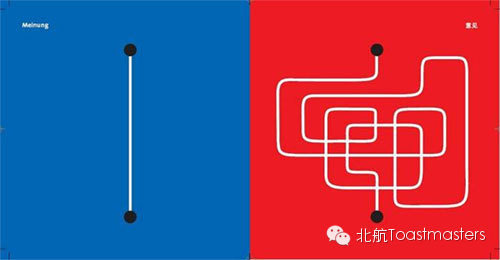
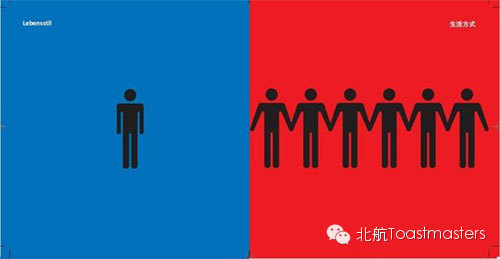
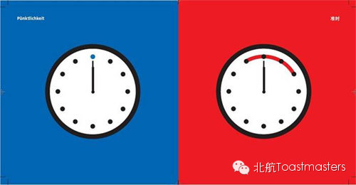
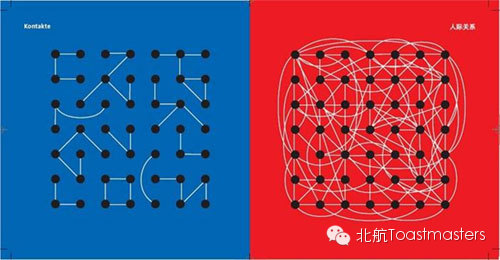
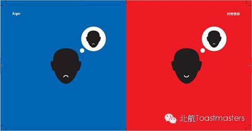
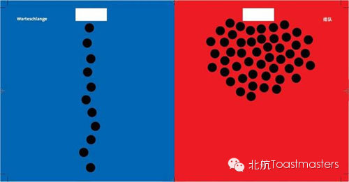
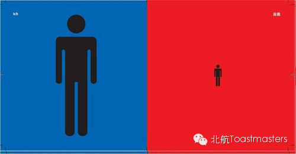
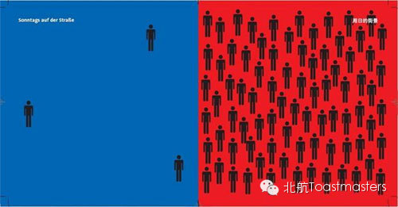
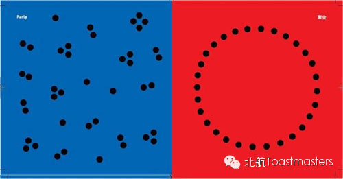
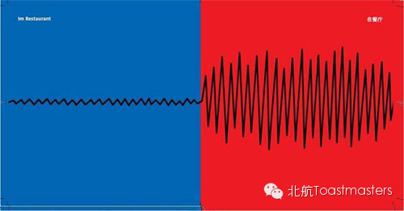

一个德国人,在中国生活一段时间后,试图用图象形式表述中西文化差异.虽不敢全盘肯定,也不得不承认巨大差别确实存在.从24组原图中仅选了十组.蓝方表示西方文化,红方则是咱中国文化.图下方则是本人拙见.
1.表达意见In Expressing Opinions

直接了当 Straightforward
拐弯抹角 In an roundabout way
直言不讳 Call a spade a spade
捕风捉影 Beat about the bush
实事求是 Factual and realistic
故弄玄虚 Deliberately mystify simple matters
2.生活方式Life Style

独来独往 Act independently
成帮结队 In twos and threes, always seeking a company
幽闲自得 Enjoy a solitary but carefree lifestyle
爱凑热闹 Love to be a part of the crowd or hustle and bustle
3. 时间观念Time and Punctuality

信守承诺 Live up to commitments
我行我素 Persist in doing his own way with no consideration of others
赴约准时 Punctual for appointments
迟到拖拉 Retardation
确切具体 Specific time setting (“So see you again next Monday at 10:00 in my office.””那就下周一上午十点我办公室再会.”)
含糊不清 Vague and lack of specificity (“下星期找个时间再碰头吧.””Well, let’s meet again sometime next week.”)
4.人际关系Interpersonal
Relationship 
莫管闲事 Mind your own business
勾心斗角 Intrigue against one another
事不关己高高挂起 None of my business
裙带关系牛B烘烘 Infamous for nepotism and namedropping
5.表达愤怒方式Display
of Anger 
有话就讲有屁就放 Say what I want to say
戒急用忍要有涵养 Refrain and behave yourself
讲究场合忌讳失态 Act accordingly and appropriately
大庭广众破口大骂 Swear in defiance of the public image
6. 排队Wait for Your Turn to be Served

规规矩矩静候等待 Quietly form a line and patiently wait
视而不见争先恐后 Turn a blind eye to the line and strive to get ahead
先到先购遵纪守法 First come, first serve. Obey the law.
文明古国败家子弟 Shame on you from an old civilization!
7. 自我Self

宇宙中心依然故我. The center of the universe is still the self. (Henri Amiel)
克己奉公忘我劳动 Work selflessly for the public interest
既得利益乃主宰人类之动力 Interest is the ruling motive of mankind. (Samuel Johnson)
人不为己,天诛地灭.—谬论! Everyone for himself and the devil take the hindmost. —ERRONEOUS!
8. 星期日街景Seen on Sundays and Streets

清静温馨天伦之乐 Enjoy
a quiet but amiable family life at home
摩肩接踵熙熙攘攘 Jostle
one another in big and noisy crowds
9. 聚会Party

三三两两促膝而谈 Chat to heart’s content in pairs or small groups
元宵中秋团团圆圆 Treat parties like family reunion gathering, forming one huge group
10. 餐馆里In Restaurants

轻声细语无碍他人 Talk
in a low voice without disturbing other diners
高声交谈划拳吆喊 Talk
loudly or shout in finger-guess games
=======================
向还不了解“北航Toastmasters"的朋友们介绍一下：这个组织专注于提升演讲能力和领导能力。每周五19:30在北航新主楼A212举办meeting.
我们欢迎每一个感兴趣的同学前来做客!
官方微信号：【beihangtmc】
（提示：长按方括号中的微信号可复制，然后在查找公众帐号时，长按输入框即可粘贴微信号）
路线：回复r即可查看路线地图